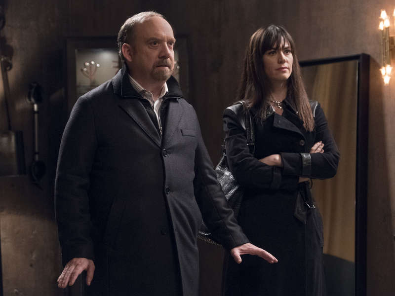

01
私人会所 / 次晨罗兹家
他们说是风险教育，夫妻听见的是支配。

剧情事实Foley 与老查克威胁会所经营者后闯入，羞辱原本准备私人活动的夫妻，要查克立刻辞去检察官职位、公开竞选州长。温迪回家指出，这种启动方式会让他成为受操纵的候选人；若仍要竞选，必须先反转 Foley 的控制。[1][2]
这一场为什么重要 · 个人解读
长辈把可被曝光的风险用来证明自己应有干预权，施压的手法本身却展示了另一种风险：候选人连私生活边界也守不住。温迪并不直接否决竞选，而是要求选项属于丈夫本人；这也埋下她后来不愿只等查克代为回应羞辱的原因。
因此 → 查克寻找能让恩主反过来受制的消息。